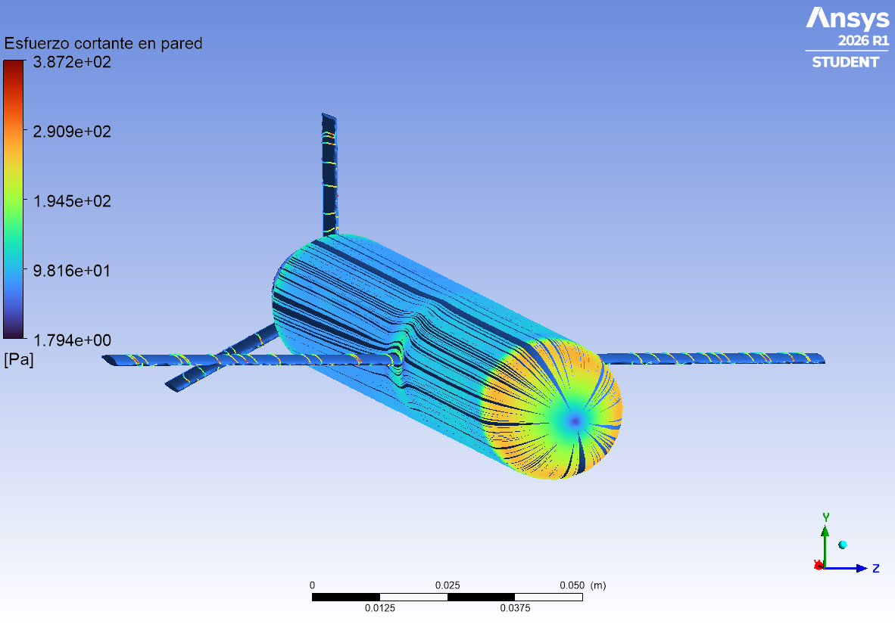
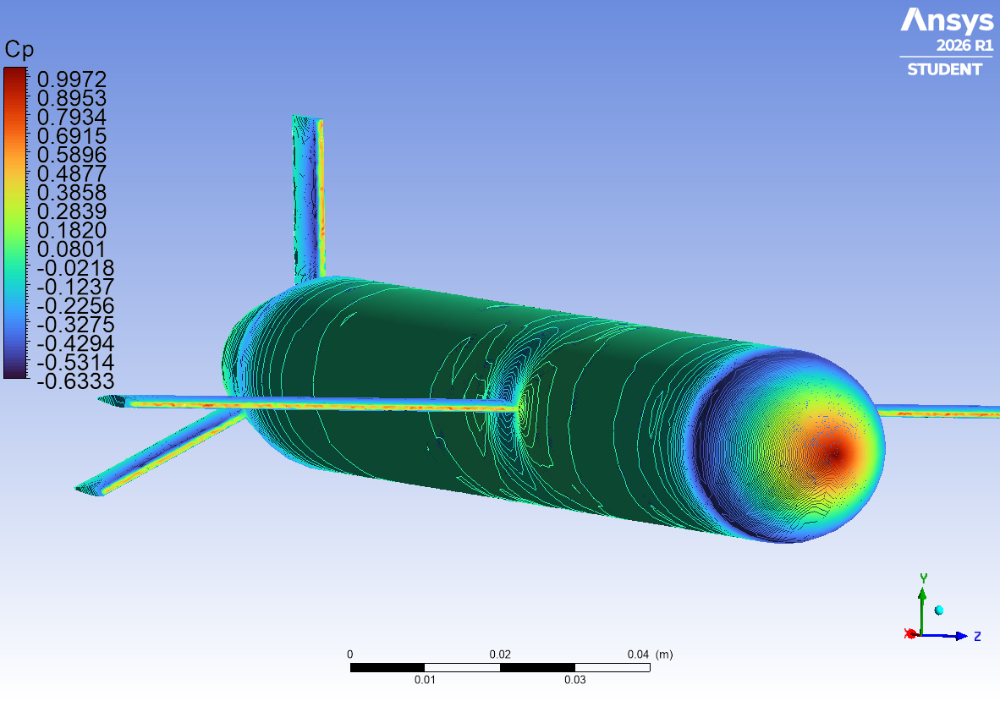
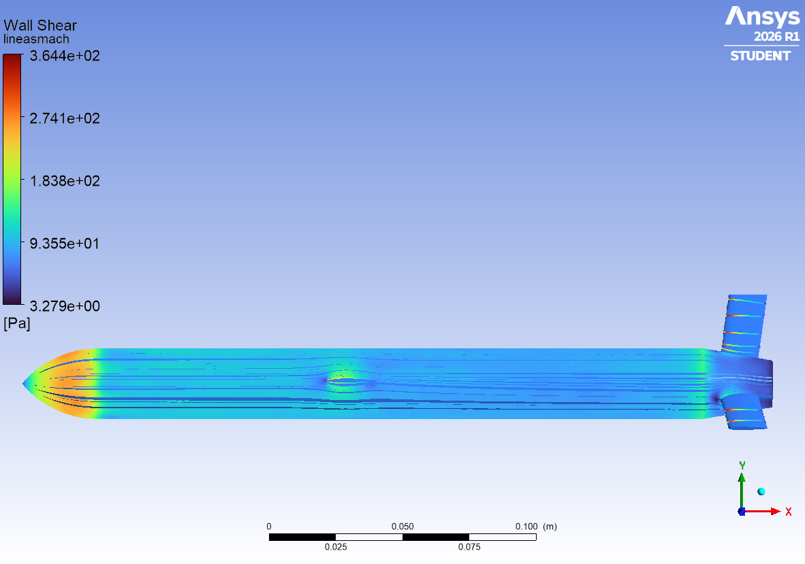
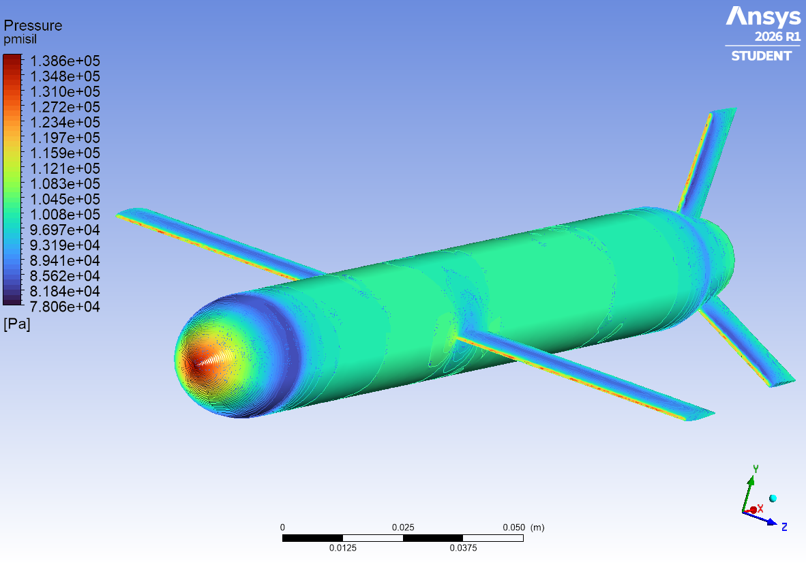

Resultados principales
Coeficientes referidos al área frontal del fuselaje (A = 531 mm², Ø 26 mm). Momento respecto al centro de gravedad (51 % de L), referido al diámetro.
0,336Coef. de resistencia Cd
0,216Coef. de sustentación Cl (α = 0°)
0,228Coef. de momento Cm (CdG)
6,55 NResistencia del modelo
0,91Mach local máximo (sin zona supersónica)
¿De dónde viene la resistencia?
Casi la mitad de la resistencia es fricción: el misil es esbelto (L/D ≈ 11) y tiene mucha superficie mojada (279 cm²) frente a su sección frontal (5,3 cm²).
La sustentación sale casi por completo de presión (Cl presión 0,2159 frente a 0,0000 de fricción): se debe a la curvatura de las alas (≈ 1 %) y a que van ligeramente por encima del eje.
Validación del cálculo
Comprobaciones para poder fiarse de los números.
Comprobaciones físicas
- Presión de remanso (teoría isentrópica)
- 143,1 kPa
- Presión máxima en la ojiva (CFD)
- 142,8 kPa −0,2 %
- Igual a la P1 del motor a M 0,72
- 143,2 kPa
- y⁺ medio / máximo en el misil
- 30,9 / 75,4
- Fuerza lateral (debe ser ≈ 0)
- Cz = −0,003
- Oscilación del Cd (últimas 200 it.)
- < 0,01 %
Convergencia del Cd
Configuración del caso
Geometría y dominio
- Modelo
- Tomahawk 1:20 · L 280,8 mm
- Bordes de salida
- truncados a 0,25 mm
- Dominio (caja)
- 3,78 × 1,75 × 1,83 m
- Delante / detrás / lados
- 1,0 / 2,5 / 0,85 m
Malla
- Celdas
- 471 730
- Tipo
- tetraedros + 5 capas de prismas
- Tamaño en el misil
- 3 mm (curvatura 0,6 mm)
- Primera capa
- 0,12 mm (y⁺ ≈ 31)
Física y solver
- Solver
- presión, acoplado, estacionario
- Aire
- gas ideal + Sutherland
- Turbulencia
- k-ω SST
- Discretización
- 2.º orden
Condiciones
- Contorno exterior
- pressure far-field
- Mach / presión / temperatura
- 0,72 · 101 325 Pa · 288,15 K
- Velocidad
- 244,9 m/s
- Ángulo de ataque
- 0°
Imágenes de postproceso
Renderizados en ANSYS CFD-Post. Informe técnico completo (PDF).




Limitaciones
- Escala 1:20. Reynolds unas 20 veces menor que el real: la fricción del modelo es mayor (corregida arriba de forma aproximada).
- Bordes de salida truncados a 0,25 mm para poder mallar: añaden ≈ 0,007 al Cd (≈ 2 %), resultado ligeramente conservador.
- RANS estacionario: no resuelve el desprendimiento de remolinos tras los bordes romos ni tras la base.
- Geometría simplificada: sin toma de aire, tobera ni juntas; un único ángulo de ataque (0°).
- Malla limitada por la licencia Student (≈ 1 millón de celdas); no se ha hecho estudio de independencia de malla.